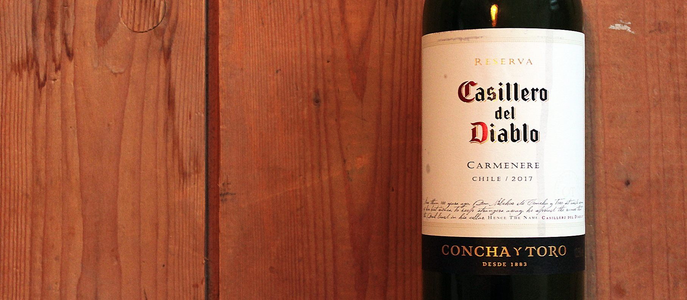
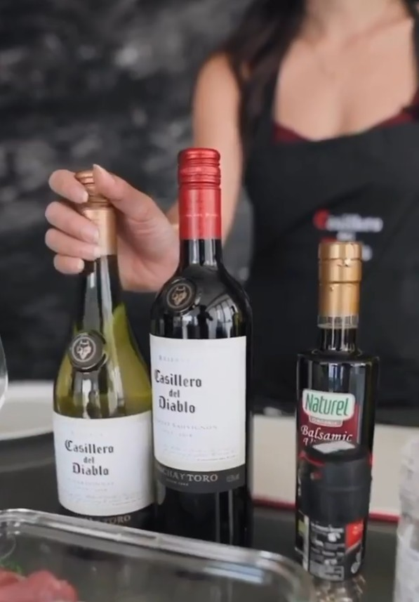

Legendary Pairings.
A localisation strategy for Casillero del Diablo that earned a Chilean wine brand a place at the Singapore hawker table — and drove a 23% increase in online sales.
A Chilean wine, looking for a local story.
Casillero del Diablo had brand recognition in Singapore but a conversion problem. Wine felt foreign, expensive, and disconnected from how Singaporeans actually eat.
The brief was to build a social-first campaign that would grow the brand's digital presence and drive eCommerce sales. But executing a global brand playbook wasn't the answer — the brand needed to earn relevance in one of the most distinctive food cultures in the world.
The category problem
Imported wine has a discovery barrier in Southeast Asia. It feels aspirational in a way that distances rather than invites.
The eCommerce gap
Strong brand awareness wasn't converting to digital sales. The bridge between recognition and purchase was missing.
The context
Mid-2020: Singaporeans were cooking at home, open to new pairings, and spending more time on social. The timing was right for something genuinely useful.
Don't fight the local culture. Join it.
Singapore's food culture is the country's deepest shared identity. Salted egg fish skin, Hainanese chicken rice, laksa — these aren't just dishes, they're touchstones. We identified that the route to relevance wasn't to position wine as a replacement for Tiger Beer, but to earn its place at the table where Singaporeans already gathered.
I led the team that developed the Legendary Pairings concept: a localisation strategy that matched Casillero del Diablo wines directly with the dishes most embedded in Singapore's food culture. The name played on the brand's existing "Legendary" positioning while turning a global story into an intensely local one.
Food is the entry point
Wine discovery happens through food. In Singapore, if the pairing is local and familiar, the wine becomes accessible by association.
Legendary Pairings
Match Merlot with salted egg fish skin. Pair Chardonnay with Hainanese chicken rice. Rosé alongside laksa. Specific, surprising, and entirely Singaporean.
Social-first, eCommerce-linked
Content designed to educate and convert, with every post linked directly to Lazada to close the gap between discovery and purchase.

From strategy to hawker table.
The campaign ran across three months — July to September 2020 — across paid social, influencer partnerships, and an earned media drop that made the pairing strategy physical.
23 posts across Facebook and Instagram established the Legendary Pairings content series. Two paid influencers with combined followings of 350,000 extended reach to audiences already interested in Singapore food culture. And for the earned campaign, we produced a media kit that said more about the strategy than any brief could: a laser-etched wooden crate, two CDD bottles, branded wine glasses, and locally-sourced Singapore snacks — four chosen to pair with red, four with white.
Paid influencers
Novita Lam (242K) and Rozz Lee (110K) — both with strong food-adjacent audiences and established credibility with Singapore's lifestyle community.
The media kit
Laser-etched wooden crate, CDD wines, branded glasses, and locally-sourced Singapore snacks. The physical embodiment of the strategy, sent to 13 earned influencers.
eCommerce integration
Every piece of content linked directly to Lazada, closing the gap between social discovery and purchase in one click.
A local story that converted.
62% of earned influencers posted organically from the media drop — a strong signal that the kit itself was compelling enough to earn coverage without obligation. The top-performing content was consistently the most local: dishes with the deepest cultural resonance drove the highest engagement and the most eCommerce clicks.